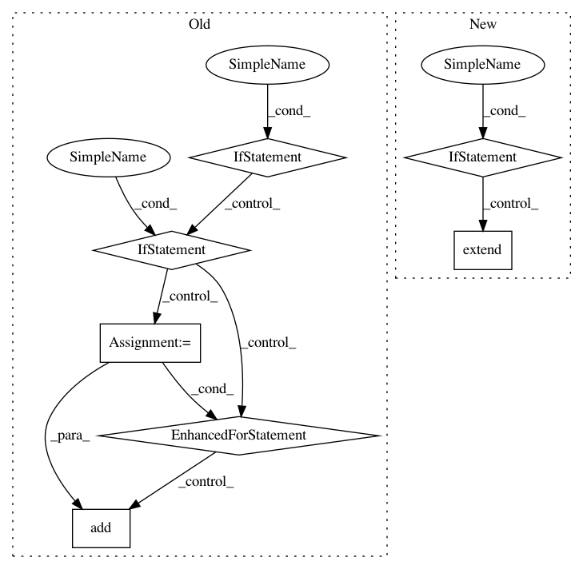

98100abde55f1fb0ab455f95b9259c3adcdbab2c,PyInstaller/building/imphook.py,ImportHook,_process_excludedimports,#ImportHook#Any#,267
Before Change
for item in not_allowed_references:
try:
excluded_node = mod_graph.findNode(item)
if excluded_node is not None:
logger.info("Excluding import "%s"" % item)
safe_to_remove = self._remove_module_references(excluded_node, mod_graph,
mod_filter=not_allowed_references)
// If no other modules reference the excluded_node then it is safe to remove
// all references to excluded_node and its all submodules.
// NOTE: Removing references from graph will keep some dead branches that
// are not reachable from the top-level script. But import hoosks
// for modules in dead branches will get processed!
// TODO Find out a way to remove unreachable branches in the graph. - Create a new graph object that will be constructed just from the top-level script?
if safe_to_remove:
submodule_list = set()
// First find submodules.
for subnode in mod_graph.nodes():
if subnode.identifier.startswith(excluded_node.identifier + "."):
submodule_list.add(subnode)
// Then remove references to those submodules.
for mod in submodule_list:
mod_referers = mod_graph.getReferers(mod)
for mod_ref in mod_referers:
mod_graph.removeReference(mod_ref, mod)
logger.warn(" Removing import "%s"" % mod.identifier)
mod_graph.removeNode(mod)
// Remove the parent node itself.
logger.warn(" Removing import "%s"" % item)
mod_graph.removeNode(excluded_node)
else:
logger.info("Excluded import "%s" not found" % item)
except ImportError:
// excludedimport could not be found.
// modulegraph raises ImporError when a module is not found.
logger.info("Excluded import "%s" not found" % item)
After Change
targets_to_remove = []
for item in not_allowed_references:
excluded_node = mod_graph.findNode(item, create_nspkg=False)
if excluded_node is None:
logger.info("Import to be excluded not found: %r", item)
continue
logger.info("Excluding import %r", item)
targets_to_remove.extend(find_all_package_nodes(item))
// Remove references between module nodes, as though they would
// not be imported from "name".
for src in hooked_mods:
In pattern: SUPERPATTERN
Frequency: 3
Non-data size: 7
Instances
Project Name: pyinstaller/pyinstaller
Commit Name: 98100abde55f1fb0ab455f95b9259c3adcdbab2c
Time: 2015-10-19
Author: h.goebel@crazy-compilers.com
File Name: PyInstaller/building/imphook.py
Class Name: ImportHook
Method Name: _process_excludedimports
Project Name: pantsbuild/pants
Commit Name: 699600d95b2b30291b26b8051cc379c0452e8c25
Time: 2013-04-09
Author: markcc@foursquare.com
File Name: src/python/twitter/pants/tasks/java_compile.py
Class Name: JavaCompile
Method Name: execute_single_compilation
Project Name: pantsbuild/pants
Commit Name: 9f236fd5795b60f8f75d77e20189dbeabc123814
Time: 2013-04-04
Author: benjy@foursquare.com
File Name: src/python/twitter/pants/tasks/java_compile.py
Class Name: JavaCompile
Method Name: execute_single_compilation